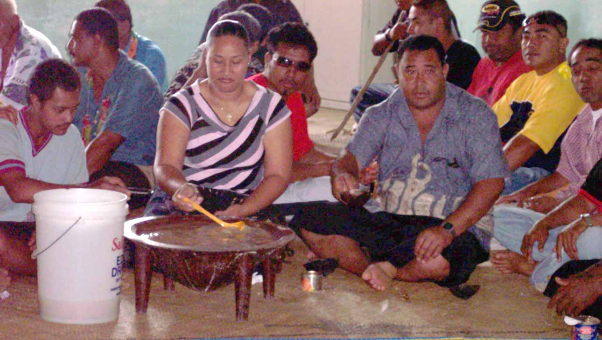
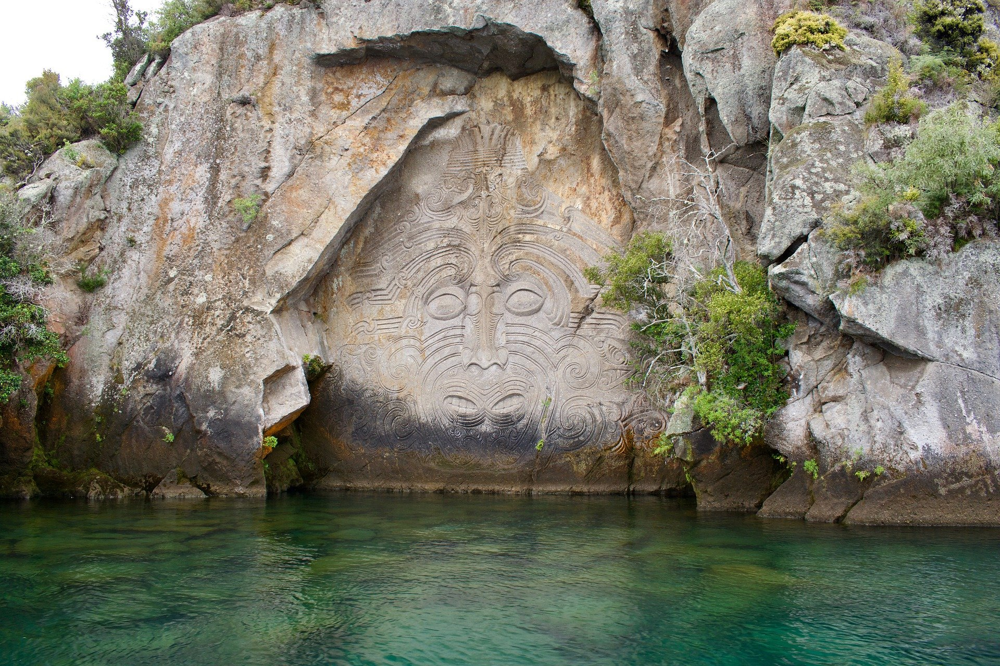

This page is all about my ethnicity. To me, knowing someones culture is important because it gives people a much better understanding of a individuals actions and why. I have two ethnicities and I will be explaining each one of them. I will be sharing to you how we manage to do things in our culture. such as, at cultural functions, the types of foods we eat, our cultural costumes, & most importantly our language.


